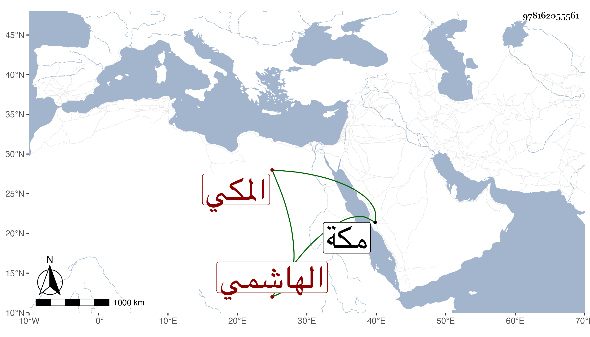

0902Sakhawi.DawLamic.ITO20230111-ara1.EIS1600.978162055561
Biography ID: 978162055561
411
عبد الرحمن بن يحيى بن عبد الرحمن بن أبي الخير محمد بن محمد بن فهد الهاشمي المكي أخو عبد القادر الآتي . ولد في ذي القعدة سنة اثنتين وعشرين وثمانمائة بمكة وحضر عند ابن الجزري وابن سلامة وأجاز له جماعة ، ومات بها وهو طفل في مستهل ربيع الأول سنة سبع وعشرين .
